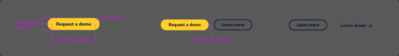
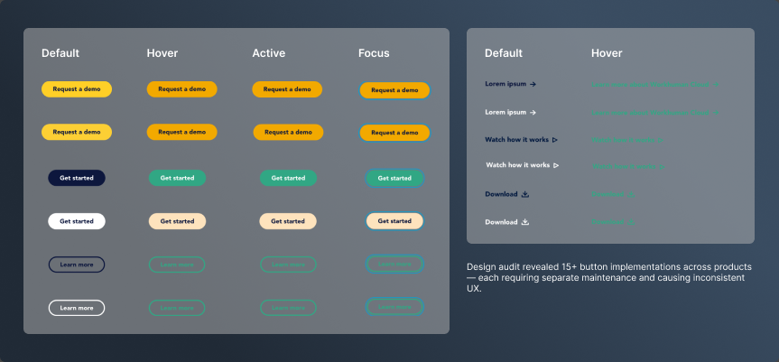
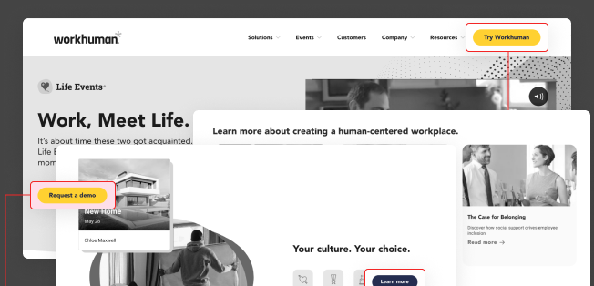
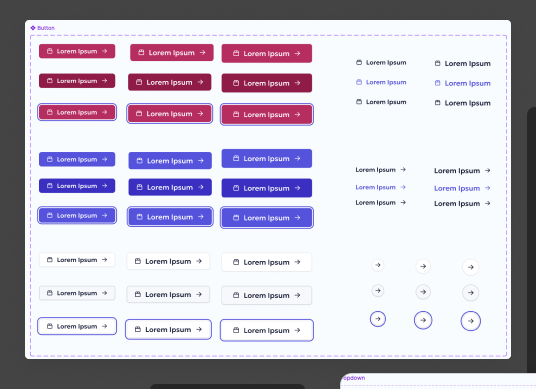
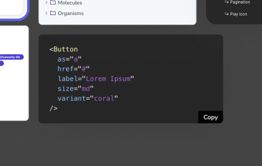
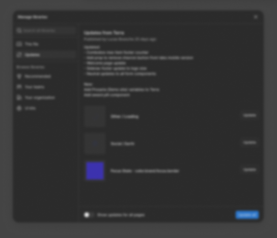
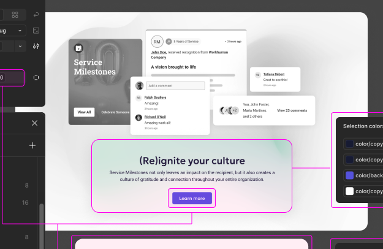
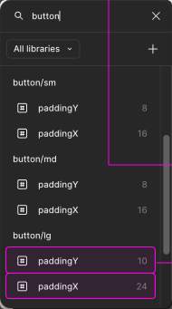

How a token-based architecture eliminated 15+ button variations, unified US and Ireland teams, and reduced dev cycles by 60%.
Impact
Before the design system, engineers rebuilt components for every feature. Designers in the US and Ireland worked from different assumptions. The system fixed both.
Problem
Workhuman builds HR and recognition products used by global companies. By the time I joined, the design inconsistency had become a real problem — two regional teams, no shared components, and engineers rebuilding the same things over and over.

Two teams with different design approaches, no shared language, and no single source of truth.
Each designer creating their own styles, colors, and spacing scales — by hand, per feature.
Engineers rebuilding components from scratch because no reusable code library existed.
Token Architecture
The token system took a few weeks to set up properly. It's slower upfront than just picking colors and moving on — but it's what made everything downstream actually manageable.

Component Library
Foundation, navigation, data display, forms, feedback — every category documented with states, variants, and accessibility annotations.


Typography scale (6 sizes), color palette (primitive + semantic), 8pt grid spacing, elevation system, border radius scale, 200+ icon library.
Top nav, sidebar, breadcrumbs, tabs, pagination, steppers. Cards (8 variants), sortable tables, lists, avatars, tooltips, modals.
Text inputs (8 states), dropdowns (6 states), checkboxes, radios, toggles, date pickers. Alerts, toasts, progress bars, loading spinners, status badges.
Documentation
Components without documentation = components that don't get used. Every component shipped with overview, anatomy, code examples, usage guidelines, behavior specs, and accessibility notes.

Governance & Adoption
The library being built wasn't the hard part. Getting people to actually use it — and keep using it as the product grew — that took more deliberate work.

Designers, developers, and product managers all had defined roles in the governance model. Contributions and reviews were distributed, ensuring the system reflected real product needs.
New component request → validate need (3+ use cases) → design review → engineering feasibility → documentation required → approval and addition to library. Kept the system lean.
Semantic versioning (1.2.3), changelog with every release, deprecation warnings with 6-month notice, and migration guides for breaking changes. Teams could update on their schedule.
The first few components didn't feel any faster than just doing it from scratch. The payoff came gradually — around component 15 or 20, engineers stopped pinging designers for specs on things we'd already solved. New features started showing up in reviews that were already mostly right. That's when I understood what the system was actually for.
Solution in Context
Token-based theming in action across Workhuman's products — consistent component usage, accessibility built in, responsive from 320px to 1920px.


Old approach (component-by-component updates): 2–3 months. New approach: 2 weeks total.